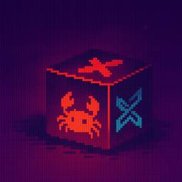
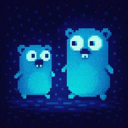
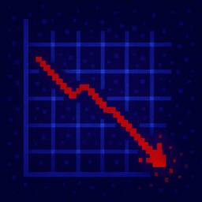
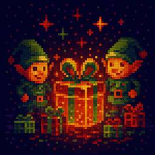
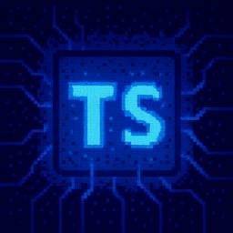
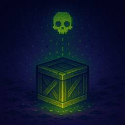

Socket
フィード

Malicious Crate Mimicking ‘Finch’ Exfiltrates Credentials via a Hidden Dependency
Socket
Socket found a Rust typosquat (finch-rust) that loads sha-rust to steal credentials, using impersonation and an unpinned dependency to auto-deliver updates.
1日前

Malicious Go Packages Impersonate Google’s UUID Library and Exfiltrate Data
Socket
A pair of typosquatted Go packages posing as Google’s UUID library quietly turn helper functions into encrypted exfiltration channels to a paste site, putting developer and CI data at risk.
1日前

November CVEs Fell 25% YoY, Driven by Slowdowns at Major CNAs
Socket
November CVE publications fell 25% YoY even as 2025 totals rose, showing how a few major CNAs can swing “global” counts and skew perceived risk.
2日前
Critical Security Vulnerability in React Server Components
Socket
React disclosed a CVSS 10.0 RCE in React Server Components and is advising users to upgrade affected packages and frameworks to patched versions now.
3日前

npm Sees Surge of Auto-Generated “elf-stats” Packages Published Every Two Minutes
Socket
We spotted a wave of auto-generated “elf-*” npm packages published every two minutes from new accounts, with simple malware variants and early takedowns underway.
3日前

TypeScript 6.0 Will Be the Last JavaScript-Based Major Release
Socket
TypeScript 6.0 will be the last JavaScript-based major release, as the project shifts to the TypeScript 7 native toolchain with major build speedups.
3日前

Malicious Rust Crate evm-units Serves Cross-Platform Payloads for Silent Execution
Socket
Malicious Rust crate evm-units disguised as an EVM version helper downloads and silently executes OS-specific payloads likely aimed at crypto theft.
4日前
Scaling Socket from Zero to 10,000+ Organizations
Socket
Socket CEO Feross Aboukhadijeh shares lessons from scaling a developer security startup to 10,000+ organizations in this founder interview.
5日前

Inside the GitHub Infrastructure Powering North Korea’s Contagious Interview npm Attacks
Socket
Socket Threat Research Team maps a rare inside look at OtterCookie’s npm-Vercel-GitHub chain, adding 197 malicious packages and evidence of North Korean operators.
10日前
Malicious Chrome Extension Injects Hidden SOL Fees Into Solana Swaps
Socket
Socket researchers identified a malicious Chrome extension that manipulates Raydium swaps to inject an undisclosed SOL transfer, quietly routing fees to an attacker wallet.
11日前